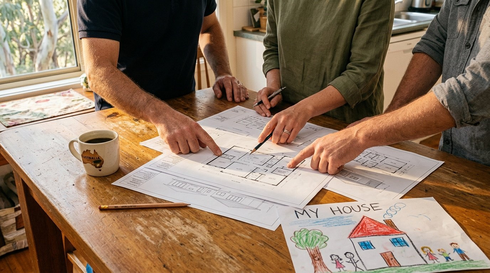

Your questions answered · Wynnum · Manly
Thinking of rebuilding in Wynnum or Manly?
Five things to know first.
You love the street. The house has run out of room. Before you ring anyone, here are the five things that decide whether a new home on your block is realistic, and what to check yourself this weekend.
 Nathan Brain, carpenter and builder at Sabre
8 September 2026 · updated 17 September 2026
5 min read
Nathan Brain, carpenter and builder at Sabre
8 September 2026 · updated 17 September 2026
5 min read
1. Was the house built before 1947?
This is the first question, and the one most families can't answer. Brisbane City Council protects the look of some older streets.
The Traditional building character overlay exists “to maintain the traditional, pre-1947 streetscape.”
Brisbane City Council, Heritage and character properties, Brisbane City Plan 2014. Wynnum and Manly have plenty of pre-war houses, which is why this is the thing we check before anything else.
If your house was built in 1946 or earlier and your street is in the overlay, knocking it down needs a development application and council decides. Built after 1946, and the character rules almost certainly don't stop you. Built before 1911, and council's position is that the house stays.
The overlay is mapped street by street. One side of a road can be in it and the other side not. Here's the plain-words guide and the three-step check.
2. What does the block actually allow?
The house is the part you can see. The block is the part that decides things.
- How wide it is.
- How much it slopes.
- Where the sewer runs.
- Which way it faces.
- How a truck gets in.
Two houses on the same street can have very different answers.
That's why a builder walks the block before anyone draws anything. A design that ignores the slope costs money in retaining walls and site cuts before a single wall goes up. A design that reads the block spends that money inside the house instead.
3. Where does the family live while it happens?
For a full rebuild, not in the house. There isn't one. Most Bayside families rent nearby so the kids stay in the same school, and they plan the build around the school year.
It's the biggest cost people forget, so ask about it early, not after you've signed.
Raises, extensions and renovations are different. Some of those can be worked around a family staying put. A good builder will tell you honestly which yours is.
4. Who draws it, and who builds it?
You don't need your own plans before you start. The usual path is a walk through your current house with the builder, then a design from an architect who understands both your family and the block, then the build.
What matters is that the person who drew it and the person building it are talking to each other from the start.
Ask any builder one question: who is on the phone when something comes up in month four? At Sabre, it's Nathan, the builder who walked your house, and he takes on a handful of homes at a time so that stays true.
“Nathan and the gang were excellent during the build. Always around to help or offer suggestions.”
Jason Turner · Google review of Sabre Constructions · June 2025. That's the month-four answer, in a client's words rather than ours.
5. What are other families saying?
Read the Google reviews of any builder you're considering — all of them, including the bad ones. Look for whether people name a person.
On Sabre's listing, families name Stewart, Nathan and Frank in most of the reviews, and the rating sits at 4.5 from 12, one-star included. That tells you more than any brochure does.
Check your own house this weekend
- Open council's City Plan mapping and type in your address.
- Switch on “Traditional building character” in the Maps Tools panel.
- Generate the property report. It lists every overlay on your lot.
Or ring council on 07 3403 8888. Or book a walk-through with Nathan and he'll check it with you, room by room, no obligation.
Common questions
How do I find out when my house was built?
The property report from council's mapping is the quickest way. Old council records, the title, and sometimes the neighbours will tell you too. The step-by-step, including Brisbane City Archives, is in the overlay check.
Does the overlay mean we can never rebuild?
No. It means council decides on an application, and there are limited situations where a pre-1947 house can come down. It isn't automatically no, and it isn't automatically yes.
Do we need an architect before we talk to a builder?
No. Most families start with the builder walking the house, then the design comes from an architect the builder works with.
Sources: Brisbane City Council, Heritage and character properties; Brisbane City Plan 2014; Sabre Constructions' public Google listing, read 5 September 2026. This is a plain-English guide, not planning advice. Council's mapping changes from time to time; check the current map before you decide anything.
Keep reading

How to check if your house is in the character overlay
Two free checks and about fifteen minutes. One tells you about your street, the other the year your house went up.

What is a knockdown rebuild package, and is it the right way to build?
What an advertised package bundles, who it suits, and six questions worth asking any builder.
Where most families start
A walk through your house with Nathan.
Room by room, with the builder who'd build the next one. No obligation, and no need to know what you want yet. He'll ring to set a time that suits the family.
Book your walk-through with Nathan Call 0422 831 306
Already thinking about a rebuild? The free block check is on the same page.